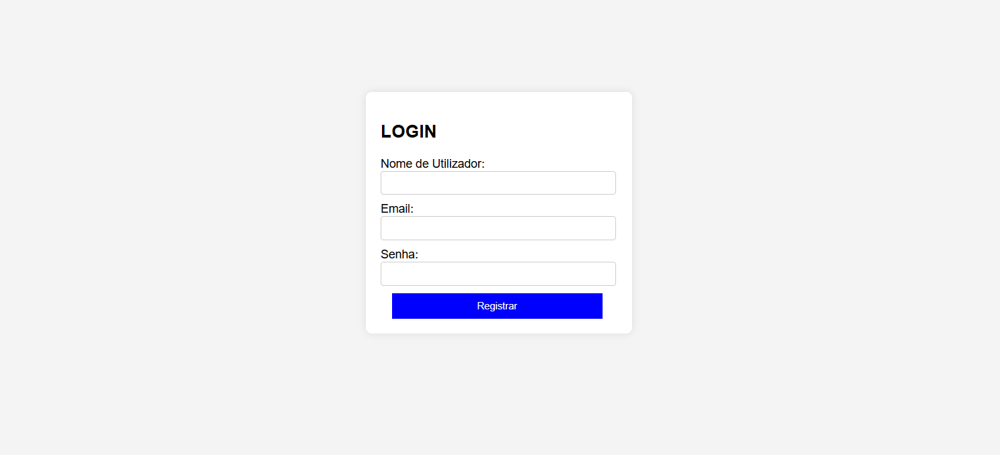
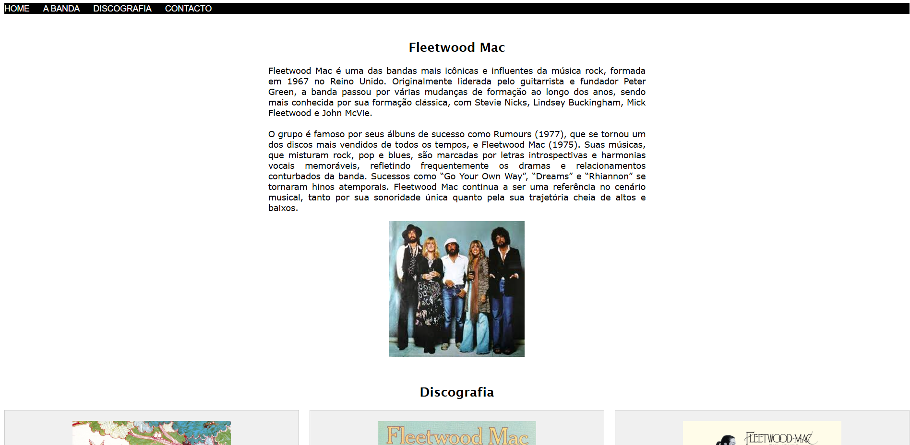
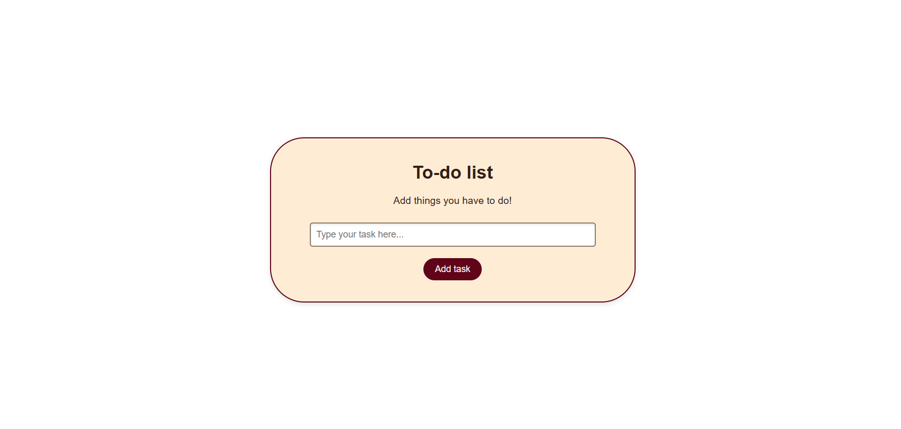

Sobre Mim
Minha jornada na tecnologia começou com a curiosidade em entender como os sites funcionam, o que me levou a aprender HTML, CSS e JavaScript. Ao longo do tempo, desenvolvi projetos que refletem meu compromisso com a qualidade e a usabilidade. Estou sempre em busca de novos desafios que me permitam aplicar e aprimorar minhas habilidades. Além do código, valorizo a colaboração e a troca de conhecimentos, acreditando que o aprendizado contínuo é fundamental no mundo da tecnologia.
Meus Projetos



×

Meus Objetivos
Estou sempre buscando evoluir como desenvolvedora e crescer tanto técnica quanto profissionalmente. No momento, meus principais focos são:
- Aprofundar meus conhecimentos em JavaScript moderno e frameworks como React, AngularJS e jQuery.
- Praticar lógica e algoritmos para melhorar minha capacidade de resolver problemas.
- Contribuir com projetos open source e me envolver mais com a comunidade dev.
- Conseguir minha primeira oportunidade como dev front-end júnior.
- Aprender mais sobre UI/UX para criar experiências mais intuitivas.